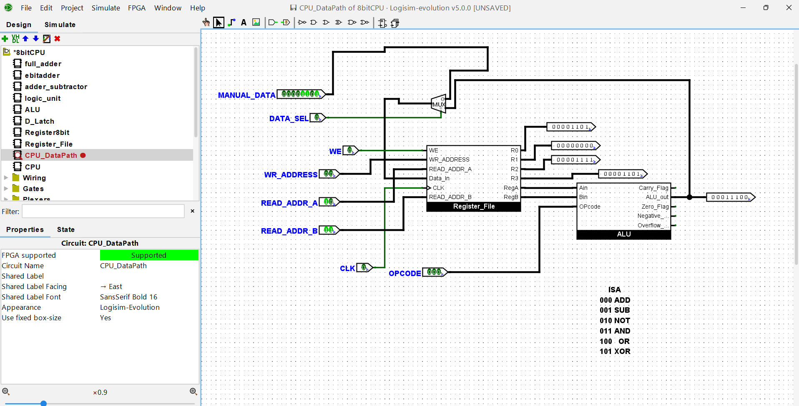
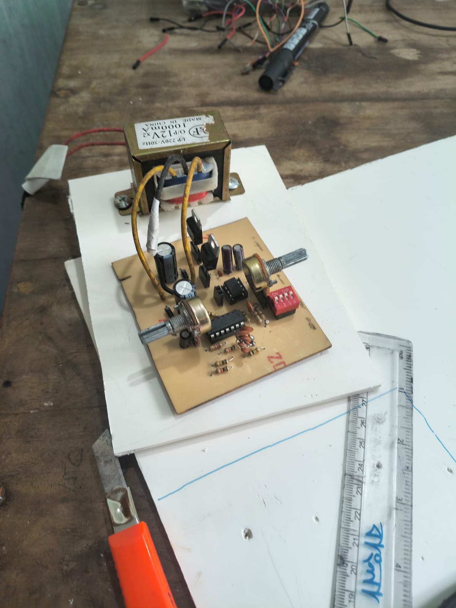
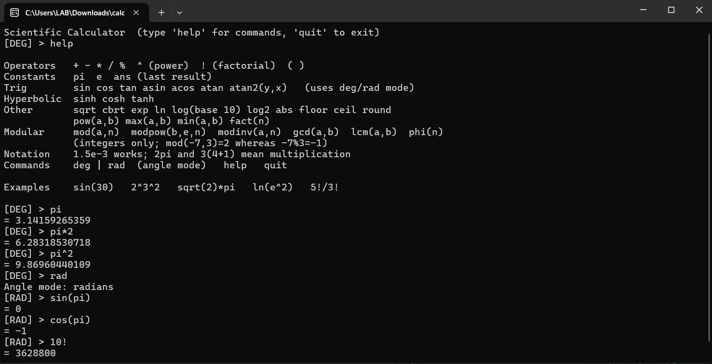

I designed an 8 bit CPU from basic gates in logisim, hoping to improve my knowledge of computer architecture. I proceeded as follows: Created a full-adder using basic logic gates, created an 8-bit adder using 8 full adders, made an 8-bit subtractor by implementing 2's complement logic, added NOT, AND, OR and XOR operations and combined all of these into an Arithmetic Logic Unit (ALU). Aftewards, I created a D-Flipflop from NAND gates and combining a few of them, created 8-bit registers to store calculations done by the ALU. I plan to later implement a instruction memory alongside a proper custom ISA of my own.

I designed and fabricated a custom PCB that takes in 220V AC Mains and converts it into +12V and -12V Power supplies suitable for powering Op-Amp circuits. Attached to it are a square wave generator followed by two integrators and a closed loop amplifier, creating square, triangular and sine-like waves respectively with functionality for amplitude and frequency adjustment.

I coded a scientific calculator with some custom functionalities such as modular arithmetic in C++.
© 2026 Rafid Zaman